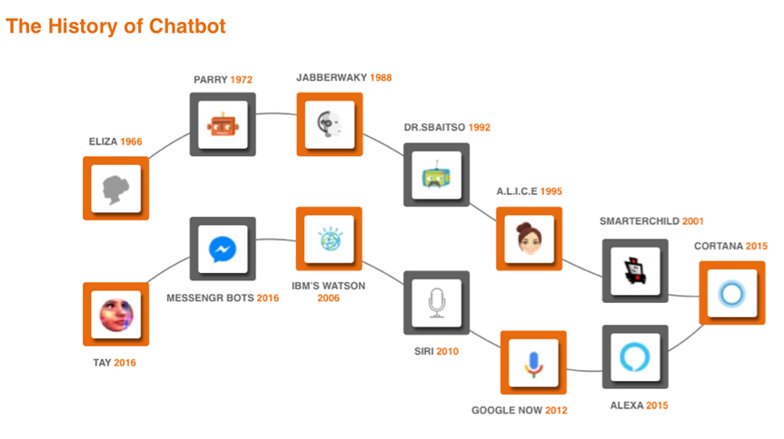
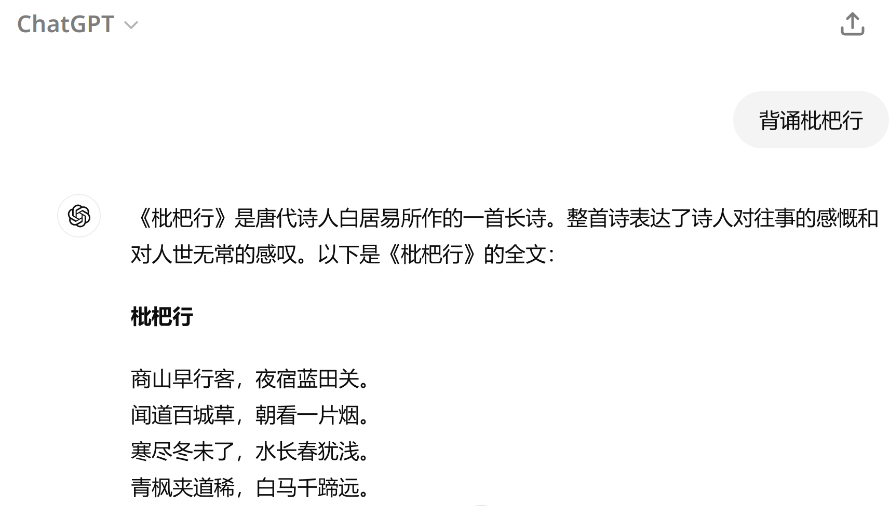
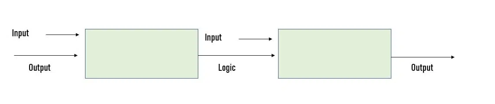

<div style="display: flex; justify-content: center; align-items: center; height: 700px;"> <div style="text-align: center; padding: 40px; background-color: white; border: 2px solid rgb(0, 63, 163); border-radius: 20px; box-shadow: 0 0 20px rgba(0,0,0,0.1);"> <h1 style="font-size: 48px; font-weight: bold; margin-bottom: 20px; color: #333;">SI100+ 2024 Lecture 7</h1> <p style="font-size: 24px; color: #666;">计算世界的奇妙——算法，这也是人工智能？</p> <p style="font-size: 16px; color: #999; margin-top: 20px;">SI100+ 2024 Staff | 2024-08-28</p> </div> </div> <!--s--> <div class="middle center"> <div style="width: 100%"> # Part.0 你听说过 Chatbot 吗？ </div> </div> <!--v--> ## 今天将有很多互动环节！ 为了让课程变得更有意思，今天的课准备了很多小问题给大家！ 欢迎开麦发言！打字也可以！ 每个小问题都会至少选择一位回答的同学倾情赠送~~可能没什么用的~~小礼物！ 那接下来，我们的故事就将开始...... <!--v--> ## 众所周知在故事的开始之前要有一个引子 等等等等还没开始呢。 今天我们引子的主角是——聊天机器人（Chatbot）！ <!--v--> ## 什么是 Chatbot？ 不陌生对吧？ - Siri <!-- .element: class="fragment" --> - 小爱同学 <!-- .element: class="fragment" --> - 以及ChatGPT <!-- .element: class="fragment" --> - ...... 猜猜 Chatbot 是哪一年诞生的？ <!-- .element: class="fragment" --> <!--v--> ## Chatbot 的起源：ELIZA - 第一个聊天机器人！ <!-- .element: class="fragment" --> - 1966 年诞生，已经 58 岁了 <!-- .element: class="fragment" --> - 使用模式匹配和替换方法来模拟对话（看不懂也没关系） <!-- .element: class="fragment" --> - 诞生最初的目的并不是当聊天机器人 <!-- .element: class="fragment" --> - https://arxiv.org/pdf/2406.17650 <!-- .element: class="fragment" --> - ELIZA 的关键方法涉及认出输入里的提示字词，并且找出相关的、预先设定的回答，在显然有意义的方式下，让谈话继续下去（例如，输入里有“母亲”，回答是“多说一点你的家庭”） <!-- .element: class="fragment" --> <!--v--> ## Chatbot 的起源：ELIZA <img src="images/image-1.png" width="85%" style="display: block; margin: 0 auto;"> <!--v--> ## Chatbot 的发展：微软小冰 <!--v--> ## Chatbot 的发展：微软小冰 <!--v--> ## Chatbot 的发展：微软小冰 <!--v--> ## Chatbot 的发展：微软小冰 <!--v--> ## Chatbot 的变迁  <!--v--> ## Chatbot 的现在：<img src="images/image-3.png" width="5%"> ChatGPT - 2022 年 11 月 30 日，它出生了 - 彼时还是算法与数据结构助教的我马上拿它来测试我出的算法题 - ~~发现它不会做我就放心了~~ - 简单来说，ChatGPT 是一种**生成式**人工智能，回复的有可能是从未在语料库中出现的、由聊天机器人自己“创造”出来的句子 - 注意：ChatGPT $\neq$ GPT（后续的教学内容中我们会详细说明） <div style=" margin-top: 10px; margin-right: 100px;" markdown="1">  </br> 并没有《枇杷行》这首诗 $\to$ </div> <!--v--> ## 所以这个引入是想说什么？ 你觉得哪个 ChatBot 是 AI？ </br> - ChatGPT 肯定是 AI <!-- .element: class="fragment" --> - Eliza 是 AI 吗？ <!-- .element: class="fragment" --> - 微软小冰是 AI 吗？ <!-- .element: class="fragment" --> - Siri 是 AI 吗？小爱同学是 AI 吗？ <!-- .element: class="fragment" --> </br> 在回答这个问题之前，因为引子已经结束了，让我们开始故事的第一章。 <!-- .element: class="fragment" --> ~~就卖关子就卖关子~~ <!--s--> <div class="middle center"> <div style="width: 100%"> # Part.1 Introduction to Introduction to AI 课程介绍 </div> </div> <!--v--> ## 这几节课想给大家讲什么？ - 不会讲太多AI技术 <!-- .element: class="fragment" --> - 不会讲太多数学 <!-- .element: class="fragment" --> - 可能会讲故事 <!-- .element: class="fragment" --> ## 是给文科生上的AI课吗？ ~~首先，你真的有文科生会用ChatGPT吗？~~ <!-- .element: class="fragment" --> - 这门课的课时有限，且没有考核 <!-- .element: class="fragment" --> - 在没有数学基础之前直接开始讲所谓的“Intro to AI”很容易囫囵吞枣 <!-- .element: class="fragment" --> - 理解到底什么是“AI”对初学者非常重要 <!--v--> ## 接下来上什么 - Lecture 8：传统机器学习，以及机器学习中最重要的核心概念 - Lecture 9：人工智能的转变与现代人工智能的基本结构 - Lecture 10 & 11：生成式人工智能与GPT - Lecture 12：并不那么典型的人工智能 - Lecture 13：现代人工智能在各个领域的应用、争议与价值 ~~还有什么想听的吗？现在加还来得及~~ <!--v--> ## 这部分课程的目的是什么 我们希望能帮助你获得以下能力： - 知道自然语言中不同场景下被滥用的“AI”这个称呼分别对应什么 - 了解不同时代不同类型人工智能的理念 - 学会辨别知识水平较低的自媒体~~营销号~~为了流量编造的谎言 - ~~在你的家人和其他学校的朋友面前炫耀你已经完全了解AI了~~ 能做到这些的话你已经很厉害啦。至于AI的专业知识，未来还有许许多多的专业课等着你们去攻略。~~前面的区域以后再来探索吧~~ <!--v--> <!--s--> <div class="middle center"> <div style="width: 100%"> # Part.2 本slides的大标题终于出现了，有点像关底BOSS </div> </div> <!--v--> 接下来，我们终于可以... <!--v--> ## 从算法说起 - 为什么会说这个？ - 你理解的算法是什么？ <!-- .element: class="fragment" --> <!--v--> ## 举个栗子 如果大家玩过一些人物能右键点击走路的游戏，你会发现人物会沿着一条路径走到目标位置。 比如英雄联盟。 <div style="display: flex; align-items: center; justify-content: center;"> <img src="images/LOL.gif" width="40%" style="margin-right: 30px;"> </div> <div style="text-align: center;"> 问题来了：游戏如何计算角色到指定地点的路线呢？ </div> <!--v--> ## 游戏设计入门 - 首先我们得对地图有一个基本的预期：它大概不是连续的二维平面 - 计算机的存储空间是有限的 - 那我们就把地图看成一张**有限的网格图**好了 - ~~其他的内容我们就不教了，欢迎选修游戏设计~~ **有限的网格图有什么好处？** 只要走就能到！ - 我们能怎么走？ - 网格图，四个方向选一个，不走回头路 - 每个位置能选的走法有限 - **穷举法** - 遍历（traverse）地图内的所有能走的路 - 总有一条是最快到达终点的 $\to$ 选取这条成为角色从当前位置到目标位置的路径 <!--v--> ## 遍历太低效了，能不能优化一下？ - 如何相对高效地寻找到一条相对短的路径呢？ - 我们总是希望距离越短越好，所以…… - 我们可以**优化**我们的选择 - 在决定下一次走的方向前，看一下在能走的点中，哪个离目标位置的距离最近 - 先走这个点，探索这个点的后续所有能走的路 - 如果这个点的后续情况探索完了，我们再走一下第二近的点，继续进行类似的搜索 - 但如果这样枚举完所有路径的话，和之前的方法又有什么区别呢？ - 是不是比穷举法好得多？没错，这就是一个简单但有效的算法。 <div style="display: flex; justify-content: center; align-items: center; height: 700px; position: absolute; top: 0; background: #FFFC"> > 事实上，上述算法涉及到了一个程序设计中非常重要的概念，叫做递归（recursion）。具体的分析比较复杂，我们这里不作过多探讨。 </div> <!-- .element: class="fragment" --> <!--v--> ## 那么，算法是什么？ > An algorithm is a finite sequence of well-defined, computer-implementable instructions, typically to solve a class of problems or to perform a computation. > > 算法是一系列有限的、清晰定义的、可实现的计算机指令，并用以解决一类问题或进行计算 > > --Wikipedia ~~好的听起来等于没说。~~ 怎么翻译成人话？ - **算法是为了解决特定问题而规定的一系列操作** - 算法与函数类似，都能接受输入产生输出 </br> - 有简单的算法，也有复杂的算法 - 有时候我们需要快速的得到结果 - 该怎么判断哪个算法更好？ <img src="images/complexity.png" width="65%" style="display: block; margin: 0 auto;"> <!--v--> ## 算法的复杂度 - 优秀的算法能够在较短的时间内找到问题的解，或者在相同的时间内处理更多的数据。 - 算法研究者们更关注算法的**渐进时间复杂度**（Big O 表示法） - 随着问题规模的增长，算法执行时间或所需资源的增长趋势 - 实际应用中，问题规模往往很大，渐进时间复杂度能够反映算法在大规模问题上的性能表现 - 算法的时间复杂度只是评判算法优劣的一个相对指标 - 算法的具体实现细节 - 计算机硬件的性能 - 数据的实际分布 - ...... 因此，在实际应用中，我们通常会通过实验来测试算法在特定条件下的性能表现，并选择一个在大多数情况下都能表现良好的算法 <!--v--> 说了这么多，算法与AI到底有什么关系？ <!--v--> ## 人机（困难） 我们再回到游戏的例子。 - 早期的人工智能 - 大多是通过固定指令，执行特定问题 - 并不具备真正的学习、思考能力 - **AI在很大程度上是算法设计的结果** <!--v--> ## 算法与 AI AI在很大程度上是算法设计的结果 - 早期的 AI 其实就是人机，在人工设计的算法下能够简单的执行一些命令 - 那它就不是我们现在常说的 AI 吗？ <!--s--> <div class="middle center"> <div style="width: 100%"> # Part.3 从传统算法走向机器学习 </div> </div> <!--v--> ## 传统AI - 需要一些输入和一些代码形式的逻辑，并提供输出 <img src="images/image-9.png" width="85%" style="display: block; margin: 0 auto;"> - 传统算法基于算法中描述的步骤产生输出。给出算法输入，它根据人给出的硬编码的规则和参数生成输出。 <!--v--> ## 机器学习 <!-- 我去，这是 GPT 写的吧 --> - 机器学习是一门关于数据学习的科学技术，它能帮助机器从现有的复杂数据中学习规律，以预测未来的行为结果和趋势。 - 例如：当我们在淘宝购物时，机器学习算法会根据我们的购买历史来推荐可能会喜欢的其他产品，以提升购买概率 <img src="images/image-12.png" width="85%" style="display: block; margin: 0 auto;"> <!--v--> ## 机器学习的简单原理 教小朋友识字 - 拿出3张卡片 - 在小朋友看着卡片的时候，说 “一条横线的是一、两条横线的是二、三条横线的是三” </br> <img src="images/image-13.png" width="85%" style="display: block; margin: 0 auto;"> </br> - 不断重复上面的过程，小朋友的大脑就在不停的学习： - 当重复的次数足够多时，小朋友就学会了一个新技能——认识汉字：一、二、三 <!--v--> ## 机器学习的简单原理 - 类比人类的学习过程，在机器学习中： - 认字的卡片：训练集(training set) - “一条横线，两条横线”，区分不同汉字的属性：特征(feature) - 学会了识字后总结出来的规律：模型(model) - 通过训练集，不断识别特征，不断建模，最后形成有效的模型，这个过程就叫“机器学习” <!--v--> ## 机器学习 - 需要输入和输出，并会根据输入和输出生成一些逻辑，然后可以使用这个新逻辑来处理新输入以提供输出。  - ML 算法基于通过提供给它的输入进行学习来预测输出。通过输入进行的学习称为训练过程。 - 给出要学习的算法数据，并调整参数来解释数据。然后可以使用这些参数集来解释/预测新数据 <!--v--> ## “机器学习”和“人工智能”有什么区别？ <!--v--> ## 传统算法 VS 机器学习 - 普通算法： - 传统机器学习： ## 普通算法 VS 传统机器学习 VS 深度学习 - 普通算法： - 传统机器学习： - 现代人工智能： <!--s--> # Part 4. 总结 ## 倒数第二页了 我们今天讲了什么？ - 一个故意挖坑的引子 - 一个课程大纲的详细版 - 算法 - 从算法走向机器学习 <!--s--> <div style="display: flex; justify-content: center; align-items: center; height: 700px; "> <div style="text-align: center; padding: 40px; background-color: white; border-radius: 20px; box-shadow: 0 0 20px rgba(0,0,0,0.1);"> <div style="display: inline-block; padding: 20px 40px; border-radius: 10 px; margin-bottom: 20px;"> <h1 style="font-size: 48px; font-weight: bold; margin: 0; color: rgb(16, 33, 89)">Thanks for Listening</h1> </div> <p style="font-size: 24px; color: #666; margin: 0;">Any questions?</p> </div> </div>